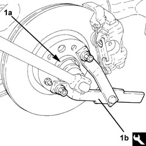
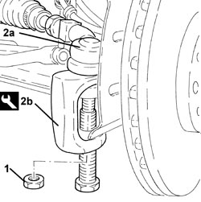
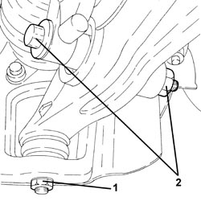
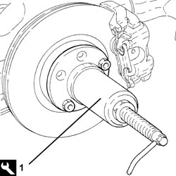

2710A14 RIGHT HAND DRIVE SHAFT WITH JOINTS - R+R
- Path
- Procedures > 27 AXLE > 2710 FRONT AXLE > 2710A DRIVESHAFTS AND JOINTS > 2710A14 RIGHT HAND DRIVE SHAFT WITH JOINTS - R+R
- Kind
- repair procedure (removal / refitting; the operation number is the code)
- Applies to
- engines: 2.2 JTS, 2.4 JTD 20v; all production periods
- Interactive page
- https://sloeber94.github.io/elrnDB-aBrrSpdr/en/#/946002094
Applies to: engines: 2.2 JTS, 2.4 JTD 20v; all production periods
 Removing
Removing
 Refitting
Refitting- Position the vehicle on a lift.
Op. 4450B04 RIGHT FRONT WHEEL - R.R
1. Remove the two stakings and undo the nut (1a) securing the front hub to the driveshaft using the tool (1b) for counter-torque.
Tool | Description | Function | Validity |
|---|---|---|---|
1870815000 | Counter-torque | Loosen/ tighten nut securing front drive shaft to wheel hub |

Applies to: engines: 2.2 JTS, 2.4 JTD 20v; all production periods
1. Undo the nut fixing the steering rod to the right front steering knuckle.
2. Disconnect the steering rod (2a) from the front steering knuckle using the tool (2b).
Tool | Description | Function | Validity |
|---|---|---|---|
1871000700 | Extractor | Extracting steering rod from strut |

Applies to: engines: 2.2 JTS, 2.4 JTD 20v; all production periods
1. Undo the nut securing the front suspension lower wishbones to the strut.
2. Unscrew the bolt securing the lower fork connecting the front suspension damper to the lower wishbone.

Applies to: engines: 2.2 JTS, 2.4 JTD 20v; all production periods
1. Use the tool to move the driveshaft back from the wheel hub.
Tool | Description | Function | Validity |
|---|---|---|---|
2000001600 | Extractor | Retract axle shaft from front wheel hub |

Applies to: engines: 2.2 JTS, 2.4 JTD 20v; all production periods
1. Loosen the bolts fixing the intermediate driveshaft to the mounting.
2. Disconnect the intermediate driveshaft (2a) from the differential and remove it together with the right driveshaft (2b).

Applies to: engines: 2.2 JTS, 2.4 JTD 20v; all production periods
Refitting
Removing- Lubricate the intermediate drive shaft and right drive shaft mating surfaces with transmission fluid.
- Connect the intermediate driveshaft complete with right driveshaft to the differential.
- Tighten the bolts fixing the intermdiate driveshaft to the mounting to the recommended torque.
Component | Fastening | dia | Value (daNm) | Validity |
|---|---|---|---|---|
Intermediate driveshaft | Bolt | M6 | (support side) 0.7 - 1.1 |
- Refit the right drive shaft in its seat on the wheel hub and secure by screwing in a new nut without tightening.
1. Tighten the bolt securing the lower fork connecting the front suspension damper to the lower wishbone to the specified torque.
Component | Fastening | dia | Value (daNm) | Validity |
|---|---|---|---|---|
Lower fork connecting front suspension shock absorber to lower track control arm | Bolt (to be replaced) | M14 | (lower track control arm side) 4.5 ÷ 5.5 + 90° |
2. Tighten the nut securing the front suspension lower wishbones to the strut to the specified torque.
Component | Fastening | dia | Value (daNm) | Validity |
|---|---|---|---|---|
Front suspension lower track control arm | Nut | M14 | (strut side) 8.1 - 9.9 |

Applies to: engines: 2.2 JTS, 2.4 JTD 20v; all production periods
1. Tighten nut (1a) securing the right front drive shaft to the wheel hub using tool (1b) for countertorque.
Component | Fastening | dia | Value (daNm) | Validity |
|---|---|---|---|---|
Front wheel hub | Nut | M24 | (driveshaft side) see operation 4450C28 |
Tool | Description | Function | Validity |
|---|---|---|---|
1870815000 | Counter-torque | Loosen/ tighten nut securing front drive shaft to wheel hub |

Applies to: engines: 2.2 JTS, 2.4 JTD 20v; all production periods
1. Make two stakings on the nut collar as illustrated in the diagram.

Applies to: engines: 2.2 JTS, 2.4 JTD 20v; all production periods
- Connect the steering links to the front steering knuckle and tighten the nut to the specified torque.
Component | Fastening | dia | Value (daNm) | Validity |
|---|---|---|---|---|
Front wheel hub | Nut | M24 | (driveshaft side) see operation 4450C28 |
Op. 4450B04 RIGHT FRONT WHEEL - R.R
- Remove the vehicle from the lift.